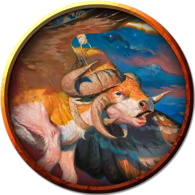

Крылатый бык
Winged Bull
Большой Небожитель, без мировоззрения

Класс Доспеха 12
Хиты 95 (10к10 + 40)
Скорость 60 футов, летая 60 футов
| мод | спас | ||
|---|---|---|---|
| СИЛ | 20 | +5 | +5 |
| ЛОВ | 14 | +2 | +2 |
| ТЕЛ | 18 | +4 | +4 |
| мод | спас | ||
|---|---|---|---|
| ИНТ | 6 | −2 | −2 |
| МДР | 10 | +0 | +0 |
| ХАР | 5 | −3 | −3 |
Чувства пассивное Восприятие 10
Опасность 4 (1100 опыта)
Бонус мастерства +2
Особенности
Языки. - понимает Небесный, но не говорит.
Атака в броске. Если бык переместится как минимум на 20 фт. по прямой к цели, а затем в том же ходу попадет по ней Боданием, цель дополнительно получает от атаки 19 (3к12) колющего урона.
Действия
Бодание. . Рукопашная атака оружием: +7 к попаданию, досягаемость 5 фт., одна цель. Попадание: 18 (2к12 + 5) колющего урона.
Описание
Архонты всегда отправляются в бой на устрашающих крылатых скакунах. Некоторые легенды рассказывают, что скакун на самом деле является физическим воплощением воли архонта, позволяющим им действовать как единому целому. Двумя наиболее распространенными скакунами архонтов являются крылатые быки и крылатые львы.